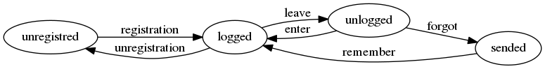

moto
Table of Contents
- 1 Мысли
- 2 Еще мысли
- 3 Введение
- 4 Определения сущностей
- 5 Use cases
- 5.1 Авторизация
- 5.1.1 Шаблон логина
- 5.1.2 Шаблон логаута
- 5.1.3 Контроллер логина
- 5.1.4 Контроллер логаута
- 5.1.5 Функцию проверки авторизационных данных - в простейшем случае логина и пароля
- 5.1.6 Обобщенный метод извлечения авторизационных данных
- 5.1.7 Javascript для форм, необязательно
- 5.1.8 Функцию проверки залогинен ли пользователь
- 5.1.9 Функцию проверки прав пользователя на доступ к какому-то объекту
- 5.2 Маршруты логина и логаута и путь пользователя по сайту при выполнении этого сценария
- 5.1 Авторизация
- 6 Interface
- 7 Модули
- 8 Сборка
- 9 Идеи
1 Мысли
Создаем самый посещаемый ресурс по мототематике. Сначала в С-Пб, потом в Москве.
Определить интересы целевой аудитории. Клубы, тусовки
Определить круг зарубежных ресурсов
Выйти на рекламодателей
Более демократичный ресурс чем мотобратан:
- модератор подписывается под баном
- можно баны обсуждать
- сообщество может отменить бан модератора!
Больше возможностей:
- поиск мотобратанов (ник, имя, район)
- кварталы по районам
- кварталы по технике
- прохваты - календарь
- карта с текущим положением прохватов
ЗАгрузка мануалов
Пользователи сами пишут себе сайт
Отметить как прочитанное
motozen
никакой рекламы
2 Еще мысли
сайт, где собрано максимум (МАКСИМУМ) необходимой информации для мотоводителей. Как результат этого будет достигнута цель - самый посещаемый ресурс.
НОВОСТИ - нужно, там стоит публиковать прессу, собственные статьи, если таковые будут, объявления о предстоящих событиях, касающихся мотоциклистов в РФ и пр. Все перечислить сложно, надо начать и в процессе работы будет ясно что нужно, а от чего можно отказаться.
УСЛУГИ - в этом разделе инетсерфер должен увидеть, где какие гаражи можно арендовать, в каких мастерских можно починиться, где есть мотошколы, где зарегистрироваться или застраховаться и пр - то есть здесь надо собрать инфу обо всех услугах, которые могут пригодиться водителю.
РЫНОК - здесь должна быть собрана информация с актуальными ссылками и удобным, логичным, рациональным поиском. Попавший в этот раздел явно хочет что-то купить. След-но, он должен иметь возможность найти нужный продукт (не важно, мотоцикл или деталь к нему, шлем, бронебойные трусы с кармашком для денег или прикольную наклейку для мотоцикла) по наименованию или по названию фирмы.
ПРОХВАТЫ - тут вроде все ясно… Мероприятия - я бы может объединила эти два раздела: Прохваты и Мероприятия, просто чтобы не делать два раздела. Не знаю стоит ли, возможно не стоит.
БЛОГИ - публикации из различных блогов. В принципе, можно этот раздел отнести к новостному (и расположить их рядом), а можно опять же объединить с Новостями. Тогда должна быть сортировка новостей для удобства поиска (мало ли людям пригодится) Сортировать можно по источникам, например - СМИ (то есть газеты и проч известные сми), блоги, новости сайта.
ВОПРОС-ОТВЕТ - что-то вроде быстрого форума, где есть возможность задать вопрос и получить ответ, а не искать подходящую для этого тему на форуме. Может оно и не надо, но мне кажется может пригодиться.
БАЗА УГОНОВ - наверняка полезная штука, как организовывать… На мой взгляд там нужен поиск по гос номерам, по маркам, дате угона. Не очень представляю откуда брать инфу кроме объявлений пользователей о том, что у них или их знакомых угнали байк. Плюс должна быть обратная связь с пострадавшим владельцем.
ГАЛЕРЕЯ - все любят фото и видео… Если можно, то стоит собирать видео из новостей и блогов отдельно от видео пользователей. То есть должны быть видео из новостей, видео дтп с регистраторов (это могут пользователи выкладывать), итоговые видео с мероприятий.Что касается фото - в раздел Галерея можно включить пресловутый Флирт, но назвать его иначе, хоть что-то вроде "На первый-второй рассчитайсь". То есть в фотоальбомов нужно несколько, так называемый флирт, плюс доска объявлений (мало ли кто-то хочет что-то продать/купить, но найти сам не может или не смог даже на сайте), фото с мероприятий, соревнований и проч событий. Определить сразу и полностью, что там должно быть - сложно, значит должна быть возможность добавления фотоальбома или видеоальбома в любой момент. Админами есессно, не участниками.
Еще один раздел сайта - Форум, но про него отдельно.
Форумы тоже делятся для удобства на разделы. Много их не нужно, штук 5 хватит.
Раздел Новости. Подраздел1. СМИ, блоги - сюда копируются новости с сайта, чтобы их можно было обсудить. Если давать на сайте комментировать каждую новость, то некоторые могут обрасти длинной бородой из комментов, будет неудобно… Если можно сделать так, чтобы например, после 5 комментов под новостью на сайте на форуме автоматически открывалась тема и комменты можно было бы оставлять только там, а не под новостью на сайте - это было бы шикарно! Не знаю как это сделать)) Можно не давать комментировать новости на сайте, а сразу под каждой новостью дать ссылку на соотв-щую тему на форуме "Обсудить на форуме". На начальном этапе развития велика вероятность, что так засорим форум темами без комментариев… что есть минус, потом замучаемся чистить форум (хотя я не представляю пока точный объем ежедневных новостей, возможно и не так много их будет). Главное, что в этом подразделе новости публикуют администраторы. Подраздел 2: ЧП, ДТП - вот здесь новости публикуют сами пользователи. На сайте это не отражается, есессно.
Раздел Мотоциклы. Подразделы: Все о машинах, все о запчастях, советы по ремонту, доска объявлений (объявления серии куплю/продам), мотошколы… Какие еще здесь нужны подразделы - не знаю, я в общем определила, что должно быть. Дальше на твое усмотрение.
Раздел Дорога. Подраздел 1. Юридическая помощь. Здесь стоит собрать инфу, касающуюся мотоциклистов, начиная от ПДД и заканчивая статьями и законами, поправками к ним и т.д. Глядишь понадобится кому-то… Это будет что-то вроде своеобразного справочника. В этом же подразделе нужно или сразу создать темку или написать где-то, что здесь можно создавать темы для выяснения вопросов с дтп, защитой на суде и прочем. Советы будут давать пользователи, поэтому надо сразу написать, что это не проф юристы, выслушайте и сами думайте, доверять или нет, следовать или нет. И мол администрация НЕ несет ответственности за верность советов/ответов/проч. Последнее особенно важно. Потому что кроме нас нашу задницу не прикроет никто, если что.
Подраздел 2. Радары. Соот-но здесь должны быть темы с инфой о радарах от участников, плюс фото с точкой на карте например.
Подраздел 3. Советы путешественников. В темах участники могут рассказать о собственных путешействиях и обязательно дать какие-то советы (главное условие, если человек открывает тему - дать совет или спросить совета. Просто бла-бла не приветсвуется). Или другие могут задавать вопросы и ждать советов от бывалых. А может кто-то попутчиков искать будет, мало ли…
Раздел О разном. Он нужен, как ни крути, людям надо дать волю хоть где-то)) Здесь могут быть следующие подразделы: Спорт (не забыть писать здесь и о каскадерах, не только о спортивентах, шоу и прочем. Ну и про циирк не забывать, есесно) Интересности - интересные факты, рекорды, музеи, приколы, …. - все, что угодно, лишь бы с мотоциклами связано было. Публиковать должны и участники, не только мы. Поиск 1го, 2го с мотоцатниклом и без - тот же Флирт, только с обсуждениями, приколами и прочее. Более свободная зона, чем в Галереее на сайте в фотоальбоме. Курилка - флудилка, на всякие свободные темы. Да оно надо, пусть для души будет, здесь должно быть минимум правил и ограничений, эдакая свободная зона.
Раздел Администрация. Подраздел - Вопросы, жалобы предложения. Тут должна быть обратная связь с админами по любым вопросам. Тут же можно разместить правила форума. _____________________
О ПРАВИЛАХ. Правила сайта должны быть на сайте и должны быть легко находимы. Если будет главная страница - значит на ней должно быть написано, что есть правила и дана на них ссылка. Если нет главной - значит оформлены как один из разделов (плюс этого в том, что люди будут видеть, что правила есть. Нет-нет, да заглянут. (ну или на каждой странице внизу давать ссылку на них, менее удобно, незаметно, читаться будет мало, толку 2-5% фактически)
Сворачивать названия разделов как на сайте мотобратан - ни в коем случае не надо.Что-то обязательно ускользнет от внимания серферов, и это минус работе над сайтом в целом.
Правила форума должны быть на форуме, при регистрации участник должен их прочитать, и пока не поставит галочку Согласен/подтверждаю/прочел/понял/не дебил - регистрация не завершится. Присылать их на почту автоматически после завершения регистрации - это 100% гарантия того, что человек их не прочтет. Не присылать правила, не давать их читать при регистрации - 200% гарантия того, что человек не будет знать об их существовании и искать их не будет. Проверено временем, опытом, личными мыканьями по форумам….
3 Введение
4 Определения сущностей
4.1 Функции для кодогенерации сущностей
Эти функции будут кодогенерировать сущности и автоматы из таблиц с наименованием и типами полей внутри этого файла.
Начнем с генерации кода из таблицы полей:
(defun gen-fields (table) (let ((rows (nthcdr 2 table))) (princ (format "(%s\n" (butlast (first rows)))) (mapcar #'(lambda (x) (princ (format " %s\n" (butlast x)))) (butlast (cdr rows))) (princ (format " %s)" (butlast (first (last rows)))))))
Теперь напишем код, который генерирует код для состояний конечного автомата:
(defun gen-states (table) (let ((rows (nthcdr 2 table)) (hash (make-hash-table :test #'equal)) (states)) (dolist (elt rows nil) (puthash (second elt) nil hash) (puthash (third elt) nil hash)) (maphash (lambda (k v) (push k states)) hash) (princ "(") (dolist (elt (butlast states)) (princ (format ":%s " elt))) (princ (format ":%s)" (car (last states))))))
И добавим к этом генератор действий - т.е. переходов между состояниями:
(defun gen-actions (table) (let ((rows (nthcdr 2 table))) (let ((x (car rows))) (princ (format "((:%s :%s :%s)" (second x) (third x) (first x)))) (if (equal 1 (length rows)) (princ ")\n") (progn (princ "\n") (mapcar #'(lambda (x) (princ (format " (:%s :%s :%s)\n" (second x) (third x) (first x)))) (cdr (butlast rows))) (let ((x (car (last rows)))) (princ (format " (:%s :%s :%s))" (second x) (third x) (first x))))))))
Соберем все это в один файл:
<<gen-fields>> <<gen-states>> <<gen-actions>>
И загрузим его:
(load-file "generators.el")
4.2 Пользователи (user)
Для начала надо определиться, какие данные мы собираемся хранить о пользователях, и
какого типа будут эти данные. Типы данных задаем в формате Postmodern чтобы потом
сохранить данные в PostgreSQL
| field name | field type | note |
|---|---|---|
| id | serial | идентификатор |
| name | varchar | имя пользователя |
| password | varchar | пароль |
| varchar | емейл |
В нашей системе пользователь может существовать (или не существовать) в одном их нескольких состояний:
- Когда пользователь еще не зарегистрирован на сайте мы можем считать его
незарегистрированным (
unregistred) - После регистрации он автоматически становится залогиненным (
logged) - Пользователь может покинуть сайт и перейти в состояние
unlogged - Пользователь может забыть свой пароль, тогда мы должны выслать ему ссылку для
восстановления пароля (
sended) - И наконец, после восстановления пароля пользователь вновь становится залогиненным
(
logged)
Все эти переходы и состояния сведем в единую таблицу:
| action | from | to |
|---|---|---|
| registration | unregistred | logged |
| unregistration | logged | unregistred |
| enter | unlogged | logged |
| leave | logged | unlogged |
| forgot | unlogged | sended |
| remember | sended | logged |
Теперь мы можем полностью описать поведение пользователя как конечный автомат:

Сводя вместе, все что нам известно о пользователе (его поведение и поля) опишем все это в коде:
(define-automat user "Автомат пользователя" <<user-fields()>> <<user-states()>> <<user-actions()>>) <<user-actions-func>> <<create-user>>
Где user-fields (поля данных) определим как:
((id serial) (name varchar) (password varchar) (email varchar))
А user-states т.е. состояния пользователя определим так:
(:sended :unlogged :logged :unregistred)
И, наконец, определим user-actions переходы между состояниями:
((:unregistred :logged :registration) (:logged :unregistred :unregistration) (:unlogged :logged :enter) (:logged :unlogged :leave) (:unlogged :sended :forgot) (:sended :logged :remember))
Теперь определим функции, которые вызываются на переходах
(defun registration () "unregistred -> logged" ) (defun unregistration () "logged -> unregistred" ) (defun enter () "unlogged -> logged" ) (defun leave () "logged -> unlogged" ) (defun forgot () "unlogged -> sended" ) (defun remember () "sended -> logged" )
5 Use cases
5.1 Авторизация
Как пользователь, я хочу иметь возможность ввести логин и пароль чтобы получить доступ к закрытому от неавторизованных пользователей функционалу.
Как пользователь, я хочу иметь возможность выйти из авторизованной сессии.
Как разработчик, я хочу конфигурировать url-ы, на которые попадает пользователь при выполнении этого сценария и навешивать свои обработчики на события логина и логаута.
Что нам для этого нужно?
- Сущность
User, имеющая поляloginиpassword
Как это работает?
Пользователь вводит логин и пароль, который передается контроллеру логина. Контроллер
логина извлекает (get-auth-data) логин и пароль, проверяет их (check-auth-data) и в
случае успеха устанавливает переменную сессии current-user и вызывает
auth-success. В случае неудачи вызывает auth-fail.
Проверим на стадии сборки, что у нас есть сущность пользователя и поля логина и пароля в ней.
(verify-exist-entity "user") (verify-exist-fields "user" '("login" "password"))
Соберем шаблоны логина и логаута
// -*- mode: closure-template-html; fill-column: 140 -*- {namespace authtpl} {template logintpl} <<loginform-tpl>> {/template} {template logouttpl} <<logoutform-tpl>> {/template}
Соберем контроллеры и все функции, которые контроллеры вызывают
(in-package #:moto) <<user-entity>> <<login-ctrl>> <<logout-ctrl>> <<check-auth-data>> <<get-auth-data>> <<is-logged>> <<auth-success> <<auth-fail>>
мы вводим:
5.1.1 Шаблон логина
<form method="POST" name="loginform"> <input type="text" id="login" name="login" /> <input type="password" id="password" name="password" /> <input type="submit" /> </form>
5.1.2 Шаблон логаута
<form method="POST" name="logoutform"> <input type="hidden" name="logout" value="logout" /> <input type="submit" value="logout" /> </form>
5.1.3 Контроллер логина
Контроллер логина использует обобщенный метод get-auth-data для извлечения данных
авторизации и функцию их проверки check-auth-data.
При успешной проверке устанавливает переменную сессии current-user с помощью функции
set-session и выполняет auth-success.
При неупехе выполняет auth-fail.
(defun loginform-ctrl (request) (aif (check-auth-data (get-auth-data request)) (progn (setf (session-value current-user) it) (auth-success)) (auth-fail)))
5.1.4 Контроллер логаута
Контроллер логаута удаляет переменную сессии current-user и выполняет logout
(defun logout-ctrl (request) (delete-session-value current-user) (logout))
5.1.5 Функцию проверки авторизационных данных - в простейшем случае логина и пароля
5.1.6 Обобщенный метод извлечения авторизационных данных
В простейшем случае данные из объекта request, но возможны и другие варианты,
поэтому этот обобщенный метод специфицируется объектом, из которого извлекаются данные.
5.1.7 Javascript для форм, необязательно
5.1.8 Функцию проверки залогинен ли пользователь
5.1.9 Функцию проверки прав пользователя на доступ к какому-то объекту
в зависимости от его роли и.т.п
Создадим шаблон формы ввода пароля
Создадим контроллер для обработки того, что пришло от формы
Создадим функцию, которая проверяет залогинен ли пользователь
(defun is-logged (request) ( (session-value current-user
5.2 Маршруты логина и логаута и путь пользователя по сайту при выполнении этого сценария
6 Interface
6.1 Инфраструктура веб-интерфейса
Для прототипа будем делать типа MVC, причем Model и View можно генерировать. Для этого можно написать хелперы чтобы генерить формочки и макрос-враппер, который оборачивает все, что выводится на веб-страничку.
Враппер управляет сесииями и выводит все в основной (root-овый) шаблон
(in-package #:moto) (defmacro with-wrapper (&body body) `(progn (hunchentoot:start-session) (let* ((*current-user* (hunchentoot:session-value 'current-user)) (retval) (output (with-output-to-string (*standard-output*) (setf retval ,@body)))) (declare (special *current-user*)) (tpl:root (list :title "title" :content (format nil "~{~A~}" (list (tpl:dbgblock (list :dbgout output)) (tpl:userblock (list :currentuser (if (null *current-user*) "none" *current-user*))) (tpl:retvalblock (list :retval retval)))))))))
Для того чтобы генерировать и выводить элементы форм, напишем хелперы:
(in-package #:moto) (defun input (type &key name value) (format nil "~%<input type=\"~A\"~A~A/>" type (if name (format nil " name=\"~A\"" name) "") (if value (format nil " value=\"~A\"" value) ""))) ;; (input "text" :name "zzz" :value 111) ;; (input "submit" :name "submit-btn" :value "send") (defun fld (name &optional (value "")) (input "text" :name name :value value)) (defun btn (name &optional (value "")) (input "button" :name name :value value)) (defun hid (name &optional (value "")) (input "hidden" :name name :value value)) (defun submit (&optional value) (if value (input "submit" :value value) (input "submit"))) (defmacro row (title &body body) `(format nil "~%<tr>~%<td>~A</td>~%<td>~A~%</td>~%</tr>" ,title ,@body)) ;; (row "thetitrle" (submit)) (defun td (dat) (format nil "~%<td>~%~A~%</td>" dat)) (defun tr (&rest dat) (format nil "~%<tr>~%~{~A~}~%</tr>" dat)) ;; (tr "wfewf") ;; (tr "wfewf" 1111) (defun frm (contents &key name (method "POST")) (format nil "~%<form method=\"~A\"~A>~{~A~}~%</form>" method (if name (format nil " name=\"~A\"" name) "") (if (consp contents) contents (list contents)))) ;; (frm "form-content" :name "nnnnn") (defun tbl (contents &key name border) (format nil "~%<table~A~A>~{~A~}~%</table>" (if name (format nil " name=\"~A\"" name) "") (if border (format nil " border=\"~A\"" border) "") (if (consp contents) contents (list contents)))) ;; (tbl (list "zzz") :name "table") ;; (frm (tbl (list (row "username" (fld "user")))))
6.2 Главная страница
(in-package #:moto) (restas:define-route main ("/") (with-wrapper (let ((lnk "~%<a href=\"/~A\">~:*~A</a>") (pgs '("reg" "auth" "users" "user/1" "order/1" "quot"))) (loop :for p :in pgs :do (dbg lnk p)) (dbg "~%~A" (all-queues)) "main")))
6.3 Регистрация
(in-package #:moto) (restas:define-route reg ("/reg") (with-wrapper (concatenate 'string "<h1>Страница регистрации</h1>" (if *current-user* "Регистрация невозможна - пользователь залогинен. <a href=\"/logout\">Logout</a>" (frm (tbl (list (row "Имя пользователя" (fld "name")) (row "Пароль" (fld "password")) (row "Email" (fld "email")) (row "" (submit "Зарегистрироваться"))))))))) (restas:define-route reg-ctrl ("/reg" :method :post) (with-wrapper (let* ((p (alist-to-plist (hunchentoot:post-parameters*)))) (setf (hunchentoot:session-value 'current-user) (create-user (getf p :name) (getf p :password) (getf p :email) "USD" "USD")))))
6.4 Авторизация
(in-package #:moto) (restas:define-route auth ("/auth") (with-wrapper (concatenate 'string "<h1>Страница авторизации</h1>" (if *current-user* "Авторизация невозможна - пользователь залогинен. <a href=\"/logout\">Logout</a>" (frm (tbl (list (row "Имя пользователя" (fld "name")) (row "Пароль" (fld "password")) (row "" (submit "Войти"))))))))) (restas:define-route auth-ctrl ("/auth" :method :post) (with-wrapper (let* ((p (alist-to-plist (hunchentoot:post-parameters*))) (result (find-user :name (getf p :name) :password (getf p :password)))) (if (null result) "RESULT: Wrong!!" (progn (setf (hunchentoot:session-value 'current-user) (id (car result))) "RESULT: Auth ok")))))
6.5 Выход из системы
(in-package #:moto) (restas:define-route logout ("/logout") (with-wrapper (concatenate 'string "<h1>Страница выхода из системы</h1>" (if *current-user* (frm (tbl (list (row "" (submit "Выйти"))))) "Выход невозможен - никто не залогинен" )))) (restas:define-route logout-ctrl ("/logout" :method :post) (with-wrapper (setf (hunchentoot:session-value 'current-user) nil)))
6.6 Список пользователей
(in-package #:moto) (restas:define-route allusers ("/users") (with-wrapper (tbl (loop :for i :in (all-user) :collect (tr (td (format nil "<a href=\"/user/~A\">~A</a>" (id i) (id i))) (td (name i)) (td (password i)) (td (email i)))) :border 1))) (restas:define-route allusers-ctrl ("/users" :method :post) (with-wrapper (let* ((p (alist-to-plist (hunchentoot:post-parameters*)))) "TODO")))
6.7 Страничка пользователя
(in-package #:moto) (restas:define-route user ("/user/:userid") (with-wrapper (let* ((i (parse-integer userid)) (u (get-user i))) (if (null u) "Нет такого пользователя" (format nil "~{~A~}" (list (format nil "<h1>Страница пользователя ~A</h1>" (id u)) (format nil "<h2>Данные пользователя ~A</h2>" (name u)) (tbl (list (row "Имя пользователя" (name u)) (row "Пароль" (password u)) (row "Email" (email u))) :border 1) "<h2>Аккаунты пользователя</h2>" (format nil "~{~A~}" (loop :for a :in (find-account :user-id (id u)) :collect (show-account i a))))))))) (defun show-account (i a) (format nil "<div style=\"background-color: #CCCCCC; padding: 2px 20px 2px 20px;\">~{~A~}</div><br />" (list (format nil "<h3>Аккаунт ~A</h3>" (id a)) (addsum a) (follow i a) (neworder a) ;; ORDERS (format nil "<h4>Ордера аккаунта ~A</h4>" (id a)) (let ((orders (find-order :account_id (id a)))) (if (null orders) (format nil "нет ордеров~%") (format nil "~{~A ~}" (loop :for o :in orders :collect (tbl (list (tr (td (format nil "<a href=\"/order/~A\">id: ~A</a>" (id o) (id o))) (td (format nil "price_open: ~A</a>" (price_open o))) (td (format nil "state: ~A</a>" (state o))) (td (format nil "stop_loss: ~A</a>" (stop_loss o))) (td (format nil "take_profit: ~A</a>" (take_profit o))) (td (format nil "currency: ~A</a>" (currency o))))) :border 1)))))))) (defun addsum (a) (frm (list (tbl (list (row "id" (id a)) (row "type"(account_type a)) (row "sum" (sum a)) (row (fld "add") (submit "Добавить денег на аккаунт" ))) :border 1) (hid "account_id" (id a)) (hid "addsum")))) (defun follow (i a) (frm (list (if (null *current-user*) (tpl:followblock (list :following "Нет залогиненного пользователя, поэтому фолловинг невозможен")) (if (equal *current-user* i) (tpl:followblock (list :following "Нельзя зафолловить самого себя")) (tpl:followblock (list :following "Надо выбрать аккаунт")) )) ;; "wefwef"))))) ;; (format nil "OPEN-ORDERS-QUEUE-FOR-ACCOUNT-~A - ~A" 1 2))))))1 ;; (if ;; (find-in-queue (format nil "OPEN-ORDERS-QUEUE-FOR-ACCOUNT-~A" (id a) (id i))) ;; nil ;; "Фолловинг: этот пользователь уже зафолловен. Расфолловить?" ;; (tbl ;; (list ;; (row "В данный момент не зафоловлен текущим пользователем" (submit "Зафолловить" ))) ;; :border 1)))) (hid "account_id" (id a)) (hid "follow")))) (defun neworder (a) (format nil "<div style=\"background-color: #FFFFFF; padding: 2px 20px 2px 20px;\">~%Создать новый ордер на аккаунте ~A:~A</div>" (id a) (frm (list (hid "neworder") (hid "account_id" (id a)) (tbl (list (row "symbol_id" (fld "symbol_id" "EURUSD")) (row "order_type" (fld "order_type" 1)) (row "risk-level" (fld "risk_level")) (row "leverage" (fld "leverage")) (row "lots" (fld "lots")) (row "sum" (fld "sum")) (row "stop_loss" (fld "stop_loss")) (row "take_profit" (fld "take_profit")) (row "" (submit "Создать ордер")))))))) (restas:define-route user-ctrl ("/user/:userid" :method :post) (with-wrapper (let* ((p (alist-to-plist (hunchentoot:post-parameters*)))) (cond ((getf p :addsum) (add-balance (parse-integer (getf p :account_id)) (parse-integer (getf p :add)))) ((getf p :follow) (dbg "~A" (bprint p))) ((getf p :neworder) (progn (create-order (parse-integer (getf p :account_id)) (let ((s (find-symb :symb "EURUSD"))) (if (null s) (err "unknown symb") (id (car s)))) t ;; order-type t ;; risk-level (parse-integer (getf p :leverage)) (parse-integer (getf p :lots)) (parse-integer (getf p :sum)) (parse-integer (getf p :stop_loss)) (parse-integer (getf p :take_profit)) )))))))
7 Модули
7.1 Cущности, автоматы и их тесты
Опишем из чего состоит модуль, это описание станет частью asd-файла:
(:module "entity" :serial t :pathname "mod" :components ((:file "entity")))
Собственно описание модуля вынесено в файл entity
8 Сборка
8.1 Утилиты
;;;; util.lisp (in-package #:moto) <<get-obj-data>> <<make-clause-list>> <<err-bprint-macro>> <<dbgout>> <<alist_plist>> <<with_wrapper>>
;; Превращает инициализированные поля объекта в plist (defun get-obj-data (obj) (let ((class (find-class (type-of obj))) (result)) (loop :for slot :in (closer-mop:class-direct-slots class) :collect (let ((slot-name (closer-mop:slot-definition-name slot))) (when (slot-boundp obj slot-name) (setf result (append result (list (intern (symbol-name slot-name) :keyword) (funcall slot-name obj))))))) result))
;; Assembly WHERE clause (defun make-clause-list (glob-rel rel args) (append (list glob-rel) (loop :for i :in args :when (and (symbolp i) (getf args i) (not (symbolp (getf args i)))) :collect (list rel i (getf args i)))))
;; Макросы для корректного вывода ошибок (defmacro bprint (var) `(subseq (with-output-to-string (*standard-output*) (pprint ,var)) 1)) (defmacro err (var) `(error (format nil "ERR:[~A]" (bprint ,var))))
;; Отладочный вывод (defparameter *dbg-enable* t) (defparameter *dbg-indent* 1) (defun dbgout (out) (when *dbg-enable* (format t (format nil "~~%~~~AT~~A" *dbg-indent*) out))) (defmacro dbg (frmt &rest params) `(dbgout (format nil ,frmt ,@params))) ;; (macroexpand-1 '(dbg "~A~A~{~A~^,~}" "zzz" "34234" '(1 2 3 4)))
(defun anything-to-keyword (item) (intern (string-upcase (format nil "~a" item)) :keyword)) (defun alist-to-plist (alist) (if (not (equal (type-of alist) 'cons)) alist ;;else (loop :for (key . value) :in alist :nconc (list (anything-to-keyword key) value))))
8.2 Шаблоны
Шаблоны будем вставлять в отдельный файл src/templates.htm
// -*- mode: closure-template-html; fill-column: 140 -*- {namespace tpl} {template root} <!DOCTYPE html PUBLIC "-//W3C//DTD XHTML 1.0 Strict//EN" "http://www.w3.org/TR/xhtml1/DTD/xhtml1-strict.dtd">{\n} <html xmlns="http://www.w3.org/1999/xhtml" xml:lang="en" lang="en">{\n} <head>{\n} <title>{$headtitle}</title>{\n} <meta http-equiv="Content-Type" content="text/html; charset=utf-8" />{\n} <link rel="stylesheet" type="text/css" media="screen" href="/css/style.css" />{\n} <link rel="Shortcut Icon" type="image/x-icon" href="/img/favicon.ico" />{\n} <script type="text/javascript" src="/js/jquery-1.5.2.min.js"></script> <script type="text/javascript" src="/js/comment.js"></script> </head>{\n} <body id="top">{\n} {$content | noAutoescape}{\n} </body>{\n} </html>{\n} {/template} {template dbgblock} <div style="border: 1px solid red; background-color: #CCCCCC; padding: 2px 20px 2px 20px;"> <pre>{$dbgout | noAutoescape}</pre> </div> {/template} {template userblock} <div style="border: 1px solid red; background-color: #CCCCCC; padding: 2px 20px 2px 20px;"> <pre>Текущий пользователь: {$currentuser | noAutoescape}</pre> </div> {/template} {template retvalblock} <div style="border: 1px solid red; background-color: #FFFFFF; padding: 2px 20px 2px 20px;"> {$retval | noAutoescape} </div> {/template} {template followblock} <div style="border: 1px solid red; background-color: #FFFFFF; padding: 2px 20px 2px 20px;"> Фолловинг: {$follow | noAutoescape} </div> {/template}
8.3 Глобальные определения
;;;; entity.lisp (in-package #:moto) ;; Подключение к базе данных (defvar *db-name* "ylg_new") (defvar *db-user* "ylg") (defvar *db-pass* "6mEfBjyLrSzlE") (defvar *db-serv* "localhost") (defvar *db-spec* (list "ylg_new" "ylg" "6mEfBjyLrSzlE" "localhost")) ;; clear db (let ((tables '("account" "order" "quot" "symb" "user"))) (flet ((rmtbl (tblname) (when (with-connection *db-spec* (query (:select 'table_name :from 'information_schema.tables :where (:and (:= 'table_schema "public") (:= 'table_name tblname))))) (with-connection *db-spec* (query (:drop-table (intern (string-upcase tblname)))))))) (loop :for tblname :in tables :collect (rmtbl tblname))))
8.4 Каркас проекта
Для генерации "с чистого листа" необходимы функции генерации сущностей, они лежат в
файле generators.el
Чтобы их подключить - можно сделать M-x load-file generators.el в emacs-е.
Эти функции помещаются в generators.el при tangle и редактировать их можно в
соответствующем разделе этого файла. Для успешной генерации сущностей, они должны быть
загружены в emacs.
Файл prepare должен идти до файла util и остальных, так как в нем компилируются
шаблоны, от которых зависит util
Файл globals должен идти до файла entity так как в нем происходит подключение к базе
данных, которое используют тесты сущностей и автоматов.
;;;; moto.asd (asdf:defsystem #:moto :serial t :pathname "src" :depends-on (#:closer-mop #:postmodern #:anaphora #:cl-ppcre #:restas #:restas-directory-publisher #:closure-template #:cl-json #:cl-base64 #:drakma #:split-sequence) :description "site for bikers" :author "rigidus" :version "0.0.3" :license "GPLv3" :components ((:file "package") ;; файл пакетов (:file "prepare") ;; подготовка к старту (:file "util") ;; файл с утилитами (:file "globals") ;; файл с глобальными определеями ;; Модуль сущностей, автоматов и их тестов <<mod-entity>> (:file "moto"))) ;; стартовый файл
8.5 Пакеты
Соберем весь код в пакет:
;;;; package.lisp (restas:define-module #:moto (:use #:cl #:closer-mop #:postmodern) (:shadowing-import-from #:closer-mop #:defclass #:defmethod #:standard-class #:ensure-generic-function #:defgeneric #:standard-generic-function #:class-name))
8.6 Подготовка к старту
Подготовка включает в себя загрузку всех необходимых библиотек, компиляцию шаблонов, и, возможно, инициализацию окружения.
8.7 Точка входа
;;;; moto.lisp (in-package #:moto) ;; Подключим глобальные определения <<globals>> ;; Описания автоматов и сущностей <<user-automat>> ;; Веб-интерфейс ;; start (restas:start '#:moto :port 9997) (restas:debug-mode-on) ;; (restas:debug-mode-off) (setf hunchentoot:*catch-errors-p* t)